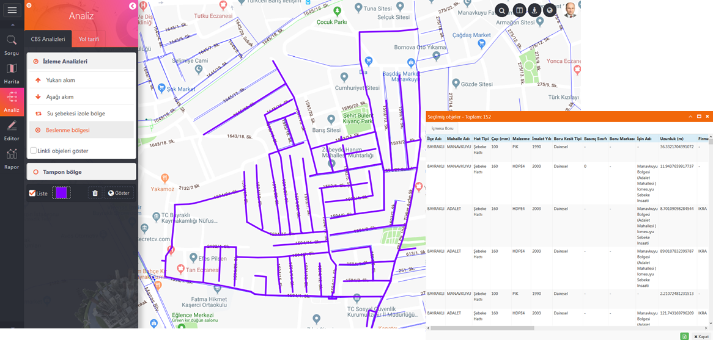

ODAGIS+ İzleme Analizleri aşağıda gösterilen 4 farklı şekilde yapılabilmektedir:
1. Yukarı Akım Analizi:
Yukarı akım analizi (upstream/memba) özellikle atıksu/yağmursuyu gibi eğime bağlı (cazibeli) akışa sahip boru hatlarında yapılmaktadır. Tıklanan nokta veya çizgi objelerden yukarı doğru olan bağlantılı objeler seçilerek analiz sonucunu veren yeni bir tabaka oluşturulur ve farklı bir renkle gösterilir.
Bu analiz çizgisel coğrafi tabaka üzerindeki hatların belirli bir noktasından başlangıç(memba) veya bitiş(mansap) yönüne doğru akışı belirlememeye yaramaktadır.
 Kullanımı :
Kullanımı :
1- Yukarı Akım (Başlangıç/Memba akış yönü) işaretlenip, "Göster" butonuna basılarak analizin başlatılacağı obje seçildikten sonra şağıda görülen aktif renkte otomatik olarak seçilen akış yönüne doğru izleme çizgisi oluşturulur.
2- Sonuçların liste şeklinde görüntülenmesi için "Liste" kontrol kutusunun işaretlenmesi gerekmektedir.
"Temizle" butonu izleme çizgisinin ekrandan temizlenmesini sağlamaktadır. "Linkli objeleri göster" kutusu işaretlendiğinde daha önceden ODAGIS+Yönetici Panelinden ön ayarları yapılan bağlantılı objeler de analiz sonucuna dahil edilecektir.
2. Aşağı Akım Analizi:
Aşağı akım analizi (downstream/mansap) özellikle atıksu/yağmursuyu gibi eğime bağlı (cazibeli) akışa sahip boru hatlarında yapılmaktadır. Tıklanan nokta veya çizgi objelerden aşağı doğru olan bağlantılı objeler seçilerek analiz sonucunu veren yeni bir tabaka oluşturulur ve farklı bir renkle gösterilir.
 Kullanımı :
Kullanımı :
1- Aşağı Akım (Bitiş/Mansap akış yönü) işaretlenip, "Göster" butonuna basılarak analizin başlatılacağı obje seçildikten sonra aşağıda görülen aktif renkte otomatik olarak seçilen akış yönüne doğru izleme çizgisi oluşturulur.
2- Sonuçların liste şeklinde görüntülenmesi için "Liste" kontrol kutusunun işaretlenmesi gerekmektedir.
"Temizle" butonu izleme çizgisinin ekrandan temizlenmesini sağlamaktadır."Linkli objeleri göster" kutusu işaretlendiğinde daha önceden ODAGIS+Yönetici Panelinden ön ayarları yapılan bağlantılı objeler de analiz sonucuna dahil edilecektir.
3. Şebeke İzole Bölge Analizi:
İzole bölge analizi yalnızca İçmesuyu, doğalgaz gibi basınçlı boru sistemlerinde uygulanabilmektedir. Atıksu ve yağmursuyu şebekelerinde kullanılamamaktadır. Tıklanan nokta veya çizgi objelerde bir arıza olması durumunda hangi nokta objeleri(vana) kapatıp en dar bölgenin nasıl izole edileceği gösterilir. Aynı zamanda analiz sonucunu veren bağlantılı objeler seçilerek yeni bir tabaka oluşturulur ve farklı bir renkle gösterilir.
 Kullanımı :
Kullanımı :
1- "Şebeke izole bölge" seçeneği işaretlenip , "Göster" butonuna basılarak analizin başlatılacağı obje seçildikten sonra aktif renkte otomatik olarak seçilen izole bölgeye ait objeler oluşturulur.
2- Sonuçların liste şeklinde görüntülenmesi için "Liste" kontrol kutusunun işaretlenmesi gerekmektedir.
"Temizle" butonu izleme çizgisinin ekrandan temizlenmesini sağlamaktadır. "Linkli objeleri göster" kutusu işaretlendiğinde daha önceden ODAGIS+Yönetici Panelinden ön ayarları yapılan bağlantılı objeler de analiz sonucuna dahil edilecektir.
4. Besleme Bölgesi Analizi:
Besleme bölgesi analizi daha çok İçmesuyu, doğalgaz gibi basınçlı boru sistemlerinde depo veya regülatörden beslenen hatları göstermek için yapılmaktadır. Tıklanan nokta veya çizgi objelerden beslenen bölgedeki bağlantılı objeler seçilerek yeni bir tabaka oluşturulur ve farklı bir renkle gösterilir.
 Kullanımı :
Kullanımı :
1- "Besleme bölgesi" seçeneği işaretlenip , "Göster" butonuna basılarak analizin başlatılacağı obje seçildikten sonra aktif renkte otomatik olarak seçilen izole bölgeye ait objeler oluşturulur.
2- Sonuçların liste şeklinde görüntülenmesi için "Liste" kontrol kutusunun işaretlenmesi gerekmektedir.
"Temizle" butonu izleme çizgisinin ekrandan temizlenmesini sağlamaktadır. "Linkli objeleri göster" kutusu işaretlendiğinde daha önceden ODAGIS+Yönetici Panelinden ön ayarları yapılan bağlantılı objeler de analiz sonucuna dahil edilecektir.
